Before and after
Phone, light mode, Food demo. Red box = the spot. Tap a picture to open it big.
HiddenNo Hidden row on the Modifiers tab now
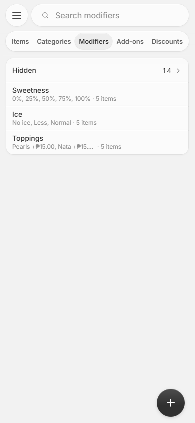

HiddenInside Sweetness: a “Hidden” row under Asked on
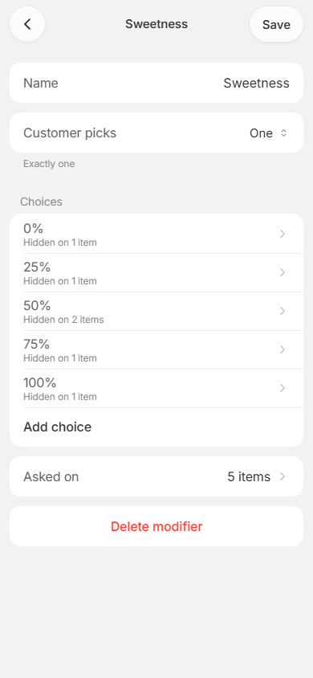
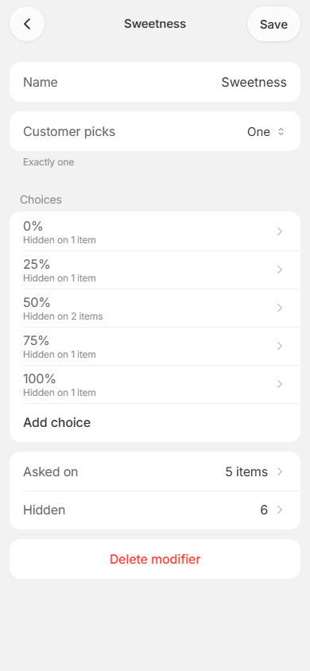
HiddenIts page: a section for each choice, a switch per item
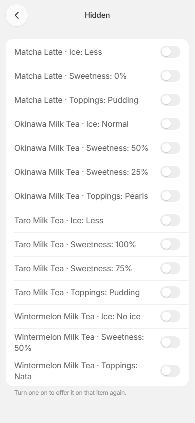
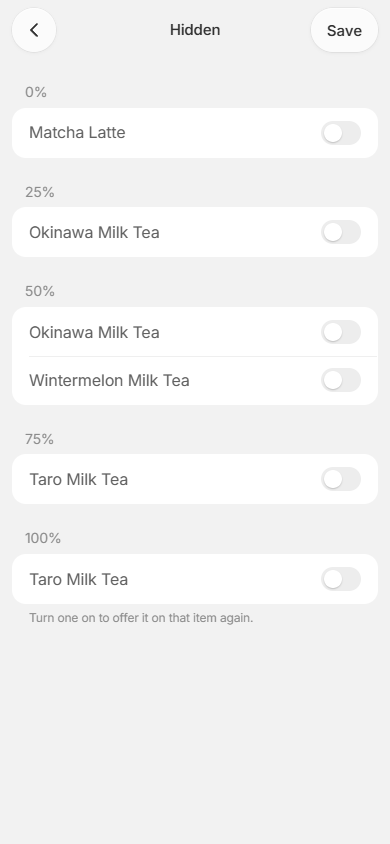
2/12Save at the top right of every sub-page
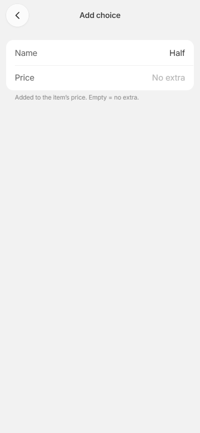
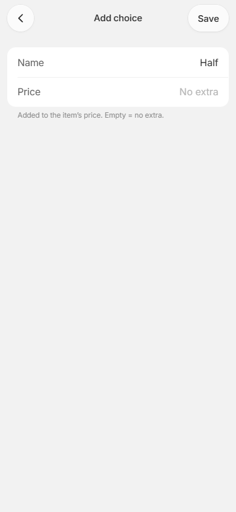
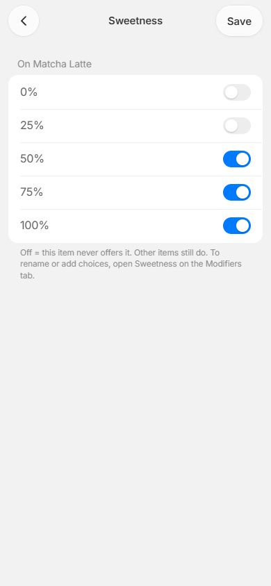
2/12Leaving with changes still asks first
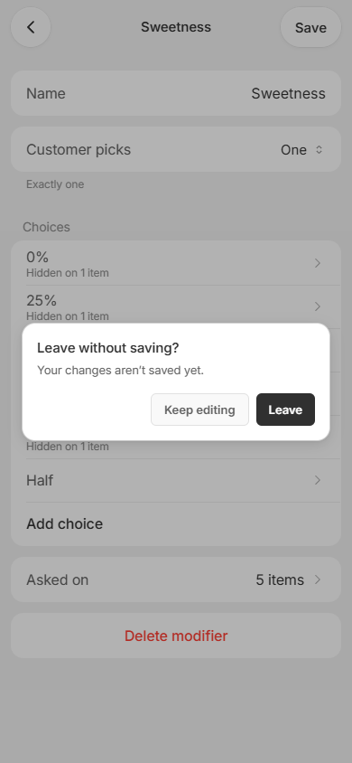
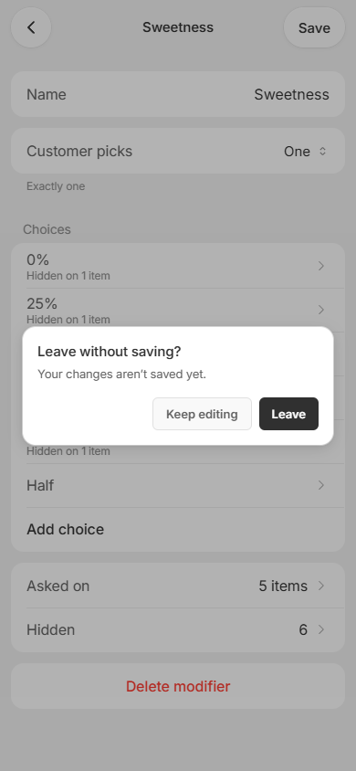
3The small “Hidden on N items” line stays under each choice
4A new store is asked “What do you sell?” once
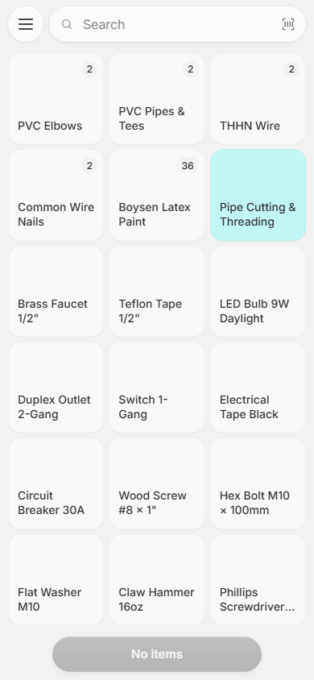
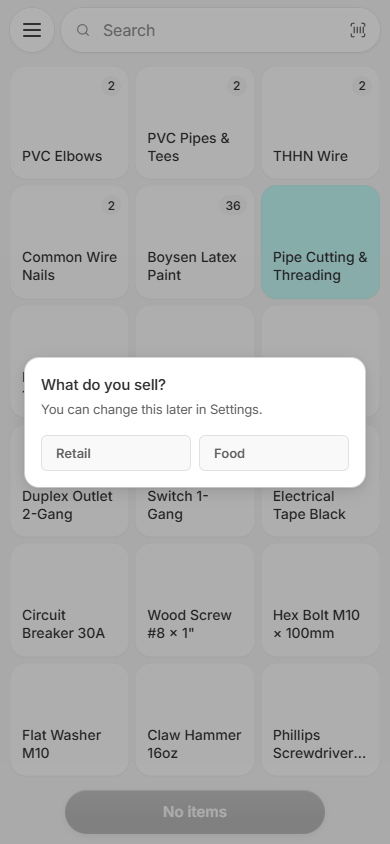
8Progress line at the top, no “?”, Pick one moves on by itself
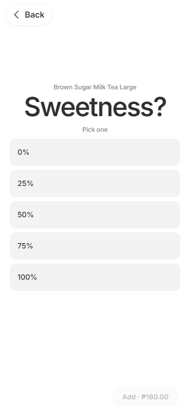
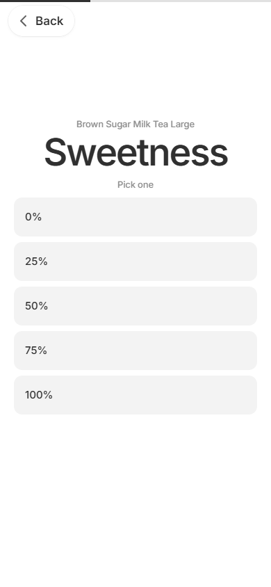
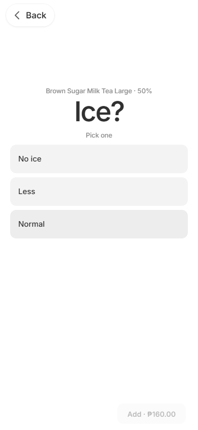
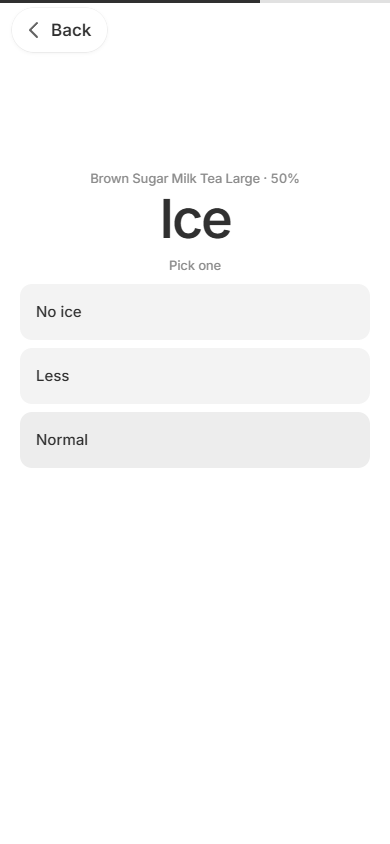
8“Pick up to 3” has a big Add / Next at the bottom

11Matcha’s row reads “Sweetness (4 of 5), Ice (2 of 3)…”
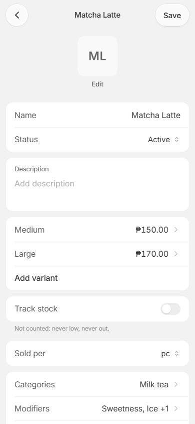
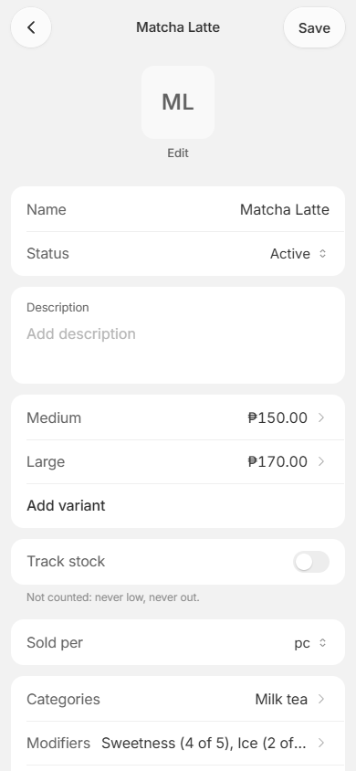
13/14Nata is greyed and can’t be tapped
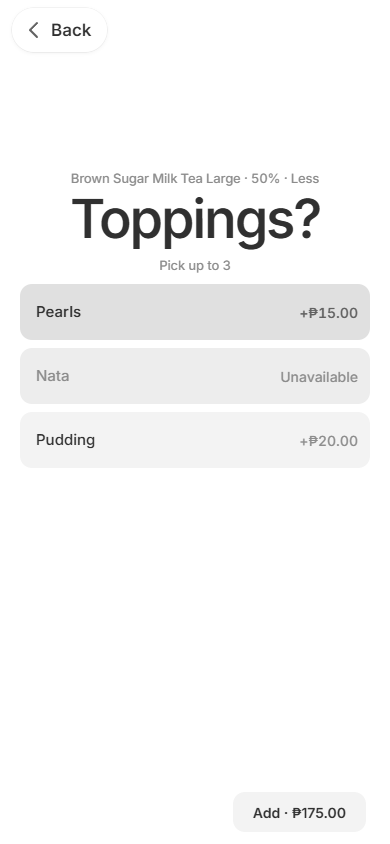
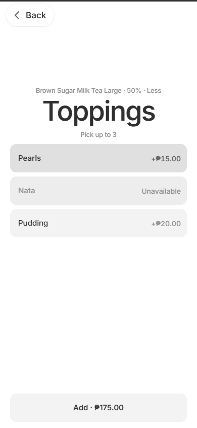
13/14Holding a choice opens nothing
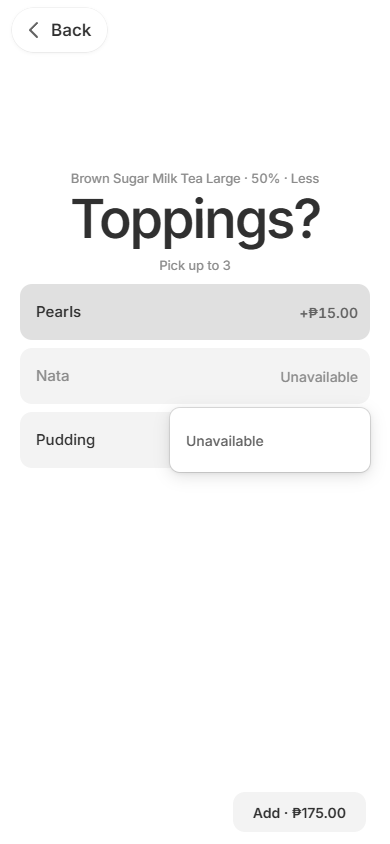
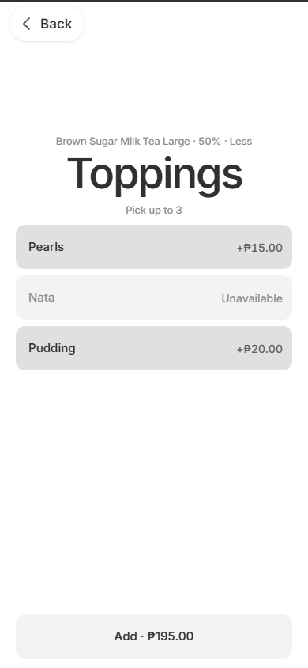
13/14“Make choices unavailable” is gone from Roles
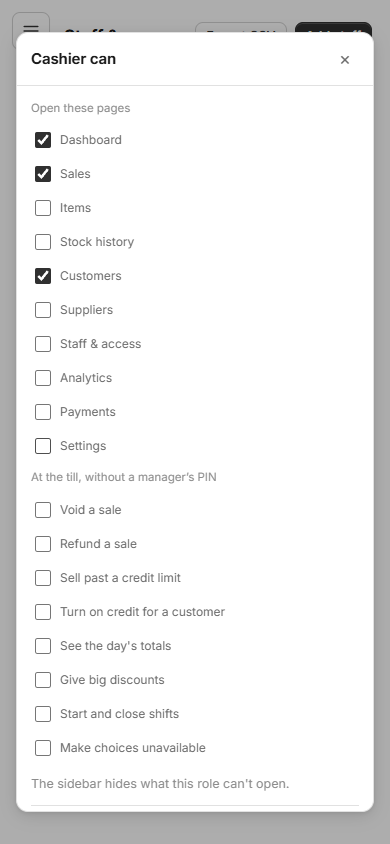
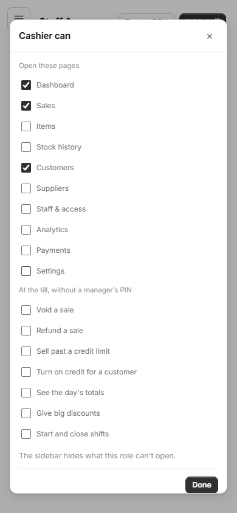
24Tapping the same drink again shows what’s in the cart, plus Make another

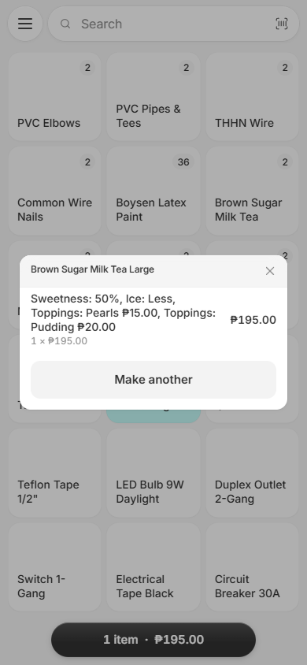
ChangeOn the Hidden page a switch takes effect when you tap Save
NoteThe “What do you sell?” card doesn’t dim the screen behind it
NoteGreyed choices still show the small word “Unavailable”
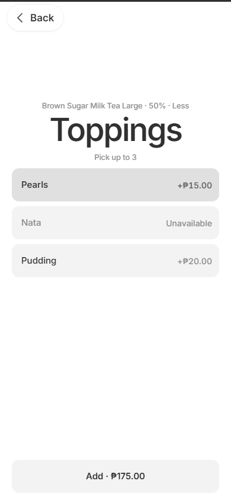